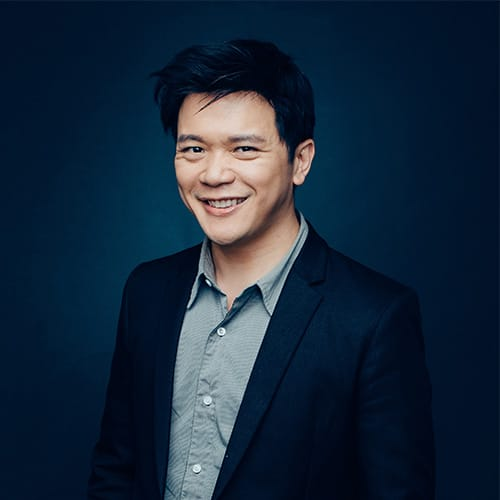
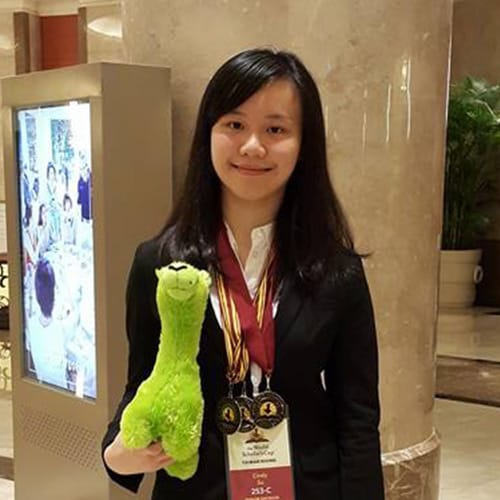
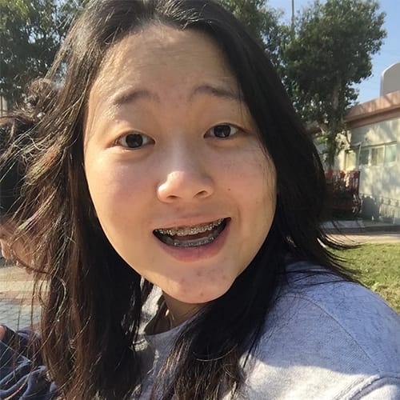

What is mirage to you?
About
Take a second to consider everything you were taught and told in your life.
Now, imagine your perceived realities turned around.
How do you feel about this revelation?
Perhaps what you now hear is somewhat counterintuitive; however, you come to realize the validity of such news.
This new understanding and insight is what we will be bringing to you through our TEDxDominicanIntlSchool event: the Reality in Mirage. What exactly is the Reality in Mirage? Mirage represents the ideas that are commonly held by the majority that do fail to possess any real justification or substantiation; on the other hand, reality represents what lies under common and popular beliefs that are founded on experience. Thus, our theme for the event, Reality in Mirage, symbolizes an integration of the two ideas, forming the unveiling of hidden truths behind an idea or notion that is widely perceived. It calls for a reformation, a renewal of one’s mind, to truly reconsider our current system of ideas and to apply a deeper understandings of these notions. Come with an open mind and prepare to walk out with a brand new view on society, the world, and yourself.
Speakers

Campbell Chang
Campbell Chang is a Taiwanese American who immigrated to the United States at the young age of 4. Growing up a third-culture kid and then returning back to Taiwan as an adult, Campbell is familiar with the blessings and challenges of being not only bicultural, but also intercultural. As a result, he’s had to learn many skills involving communication and connecting with others. Campbell graduated in 2001 from Binghamton University in New York with a B.A. in English Literature. Before starting his current position at Studio Classroom in 2003, Campbell worked as a professional actor in New York. Since joining Studio Classroom, Campbell has worked as a co-host, actor, editor, writer, singer and performer for the Studio Classroom family of magazines and media programs. In June 2007, Campbell married his wife, Linda Way Chang. The two now live in Taipei with their two beautiful daughters, Alicia and Kaitlyn.
Cindy Su
Turning 17 years old this year, Cindy currenlty studies at Dominican International School (DIS). She personally consider herself a hardworking student, but she doesn't spend all of her time studying. In fact, she has quite a few hobbies. She likes baking and cake decoration. She also enjoys music which motivated her to become a member of the DIS school band. She is also a big fan of movies and is especially interested in the technology and design behind the scenes. She had also attended competitions such as World Scholars Cup, which intensely improved her overall Enligh skills. With those experiences she gained, she is able to look at the world from a different perspective. Overall, she wishes that, with her experiences, she can express what is truly important and meaningful in her talk.
Danicar Hsu
Danicar Hsu is currently a junior from Wego private high school. She is more than honoured to participate in this year's TEDxDominicanIntlSchool event. Through her participation in debate training, she has learnt avoid accepting warrantless claims and to be critical on information she receives. She believes that her life experience is something that has also become a solid piece evidence to support her points of view. Danicar wishes for participants to know that by viewing events from a different perspective and a critical mindset, one may be surprised with the unexpected results that one may receive. She asks for all to look forward to receiving a mind-blowing Ted talk!Divyns
Born in Nantes (France), Divyns started to compose music at 10 years old, learning drums and several percussive instruments in a music school. 5 years later, he directed a band of latin music playing his own compositions. Interested in many kinds of music, he produced electronic, classical, pop, RnB, hip hop music depending on his inspiration. In 2012, Divyns decided to live in Taiwan in order to perform and mix in night clubs, bars, events and produce electronic dance music. After working and directing on a music video promoting Taiwan « Stranger in Taiwan » and making his entertainment videos « Step by step » about the composition processes of his own electronic musics, he met some influent people who all promoted his music creations. The famous Facebook page « Taiwan talent show » also shared many of his videos accumulating million views. Today, Divyns collaborates with the YouTube channel Stop Kiddin’ Studio (550 000 followers) as the main composer and keep on composing, making music videos and performing, mixing for some events in Taiwan.Ellen Chu
Having graduated from UC Berkeley with a Bachelor of Arts degree in economics, Ellen Chu has been working in the TV and radio entertainment field since 1992. With her extensive experience in the entertainment industry, Ellen hosted the Golden Bell award-winning traveling television program - 繞著地球跑 and many more television shows. She also starred in soap operas, television commercials, and won the best radio DJ in the 2014 Golden Bell award. Furthermore, she is known for hosting many large scale events in the industry. Ellen also published 2 books: 曲艾玲的A咖養成記 (a sharing of her personal life story and a guide to get into the top 50 universities in USA.) and 曲艾玲的A咖育兒魔法書 (a book for raising kids with a mind of their own) Last but not least, she is the founder and consultant of "XL ACADEMY”, which is a college prep school for students who wish to study abroad after high school.Ginny Hwang
Ginny is currently a freshmen at Dominican International School and an executive directors of the school’s Model United Nations club. Possessing a strong debate background with numerous experiences emceeing for school wide events, she possesses a great passion for public speaking. Ginny is also the president and founder of different clubs and organizations in school. Given the opportunity to speak at TEDxDominicanIntlSchool this year, she hopes to share her insight......Kenneth Wall
Ken grew up on the East Coast of the United States in New York, New Jersey, and, mainly, South-central Pennsylvania. He received a Bachelor’s Degree in Creative Writing from the University of South Florida with a minor in Economics at a time when the university was still growing but was known for its writing and poetry focus. He received his Master’s Degree from the University of Wisconsin in Secondary English Education (M.S.Ed.) and currently holds certifications to teach in three states: Wisconsin, Minnesota, and Iowa. He has taught English Composition, Literature, and Public Speaking at the high school and college levels for twenty years in the US and Taiwan, most recently at Dominican International School in Taipei. His most notable achievements are as the Department Head of English at a public school which won the National Blue Ribbon Award for Excellent Academic Achievement five years in a row, and the creation of the College-Contracted Classes Program where students earned college credits while still in high school at that same school. His passion for reading and writing have led him to pursue life-long learning objectives and the creation of no less than seven novels, one of which is being considered for publication by Harcourt Publishers.Yu-Che Su
Ken grew up on the East Coast of the United States in New York, New Jersey, and, mainly, South-central Pennsylvania. He received a Bachelor’s Degree in Creative Writing from the University of South Florida with a minor in Economics at a time when the university was still growing but was known for its writing and poetry focus. He received his Master’s Degree from the University of Wisconsin in Secondary English Education (M.S.Ed.) and currently holds certifications to teach in three states: Wisconsin, Minnesota, and Iowa. He has taught English Composition, Literature, and Public Speaking at the high school and college levels for twenty years in the US and Taiwan, most recently at Dominican International School in Taipei. His most notable achievements are as the Department Head of English at a public school which won the National Blue Ribbon Award for Excellent Academic Achievement five years in a row, and the creation of the College-Contracted Classes Program where students earned college credits while still in high school at that same school. His passion for reading and writing have led him to pursue life-long learning objectives and the creation of no less than seven novels, one of which is being considered for publication by Harcourt Publishers.Schedule
| 14:30 - 15:00 | Check-in |
| 15:00 - 15:30 | Opening |
| 15:30 - 17:00 | Session 1 |
| 17:00 - 17:30 | Intermission and snacks! |
| 17:30 - 19:00 | Session 2 |
| 19:00 | Closing |
Tickets
| Type | Price | Available Time |
|---|---|---|
| DIS Reserved* | $ 500 / person | 5/1 - 5/15 |
| General Admission | $ 600 / person | 5/1 - 5/26 |
All tickets include catering services. (intermission snacks)
*DIS Reserved Tickets are only available to faculties, students, and parents of Dominican International School. Upon purchase, you must provide appropriate ID or certification to prove that you meet the conditions for purchase.
Get TicketsTerms and Agreements
Upon purchase, you agree to the following terms:
- Tickets are unrefundable, unless event is cancelled.
- Tickets can be trasferred.
- Felis enim feugiat.
- Dolor pulvinar etiam.
- Etiam vel felis lorem.
- TEDxDominicanIntlSchool holds all rights to revise the terms of purchase.
Partners
Our event would not be possible without them...